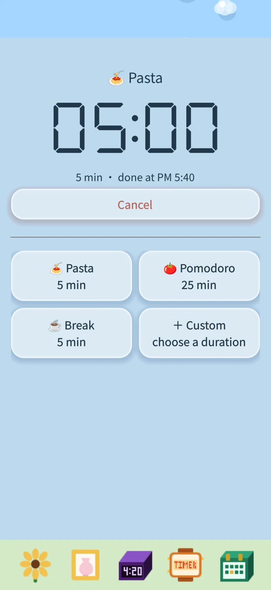
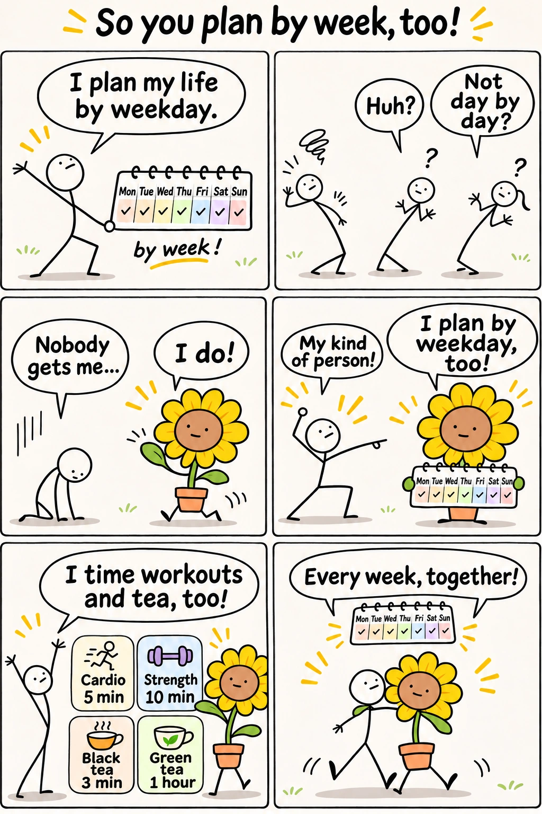
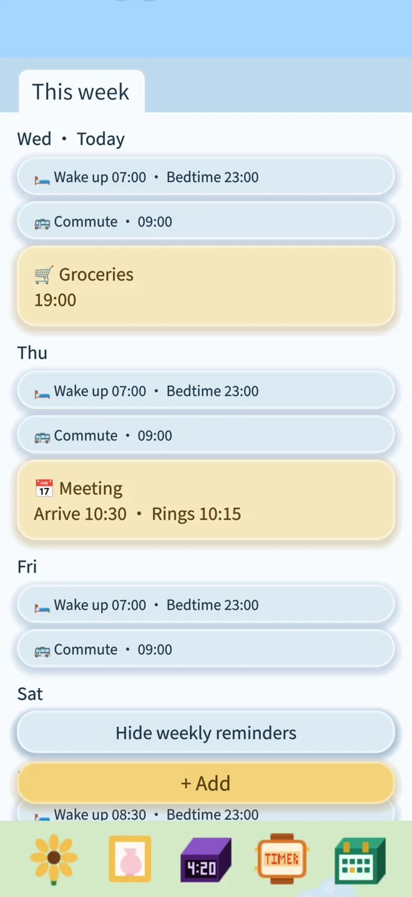
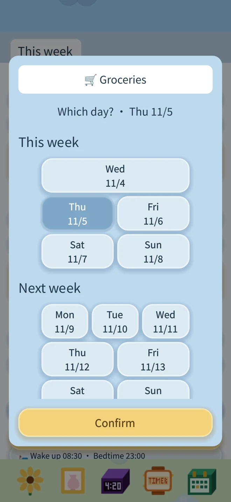
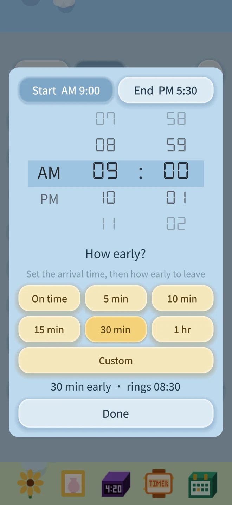

Timer: save your favorite countdowns
Choose a timer preset for noodles, tea, or a break, then confirm to start.
Save your own names and durations to use again.

For people who plan life by the day of the week.
If you plan your life by the day of the week, Little Little Flower Alarm is for you. Work on Monday, school pickup on Wednesday, a class on Friday, a slower start at the weekend: choose what happens on each weekday and when you want a reminder. Your plans repeat every week. Need a one-off change? Skip it once; next week stays on track. See weekly routines and one-time plans together in Schedule.
No ads. No subscriptions. No internet required. 100% yours.
Your alarms, reminders, and flower progress stay on your device.
Download on the App Store
Choose a timer preset for noodles, tea, or a break, then confirm to start.
Save your own names and durations to use again.

See this week, next week, and the weeks ahead. Blue reminders repeat weekly; yellow reminders ring just once.



Drag the fertilizer bag onto the flower. Each bag is one step: it starts as a seedling, the 1st bag grows a bud, the 2nd makes it bloom, and every bag after that makes the stem taller. There's no limit, so the more you save up, the taller it gets.
Drag the watering can onto the flower to water it. Once a day is enough. Skip watering for too long and the flower slowly wilts:
Don't worry if it wilts. One watering perks it right back up.
Each time you snooze your wake-up alarm, the flower bows its head a little. After 3 snoozes it's bent all the way down. The next day it stands up again. Go back to an earlier date to see how many times you snoozed that day.
Skip once skips only the next occurrence. It rings again at the same time next week.
Pause day stops every reminder on that weekday until you turn it back on. Good for holidays or days you don't need for a while.
All your alarms, reminders and flower progress stay only on your iPhone. We don't collect or upload anything. Deleting the app deletes this data, and it can't be recovered.
Questions or ideas? We'd love to hear from you 💌